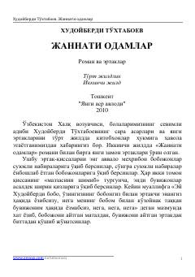

JOTaniqli yozuvchi Xudoyberdi To‘xtaboyevning "Jannati odamlar" romani va ibratli ertaklari.
Ushbu kitob mashhur yozuvchi Xudoyberdi To‘xtaboyevning to‘rt jildlik saylanma asarlarining ikkinchi jildi bo‘lib, unda "Jannati odamlar" romani va yangi zamon ertaklari o'rin olgan. Asar insoniylik, mehr-oqibat va ma'naviy qadriyatlar haqida hikoya qiladi.